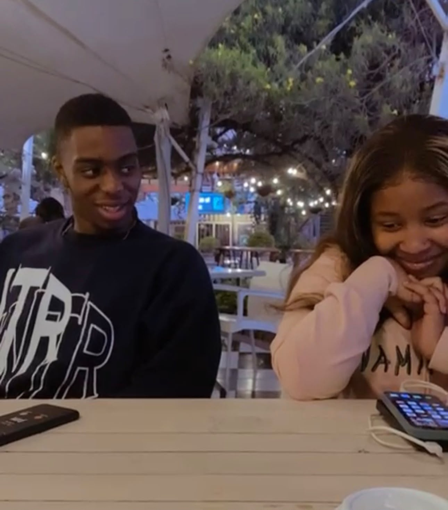
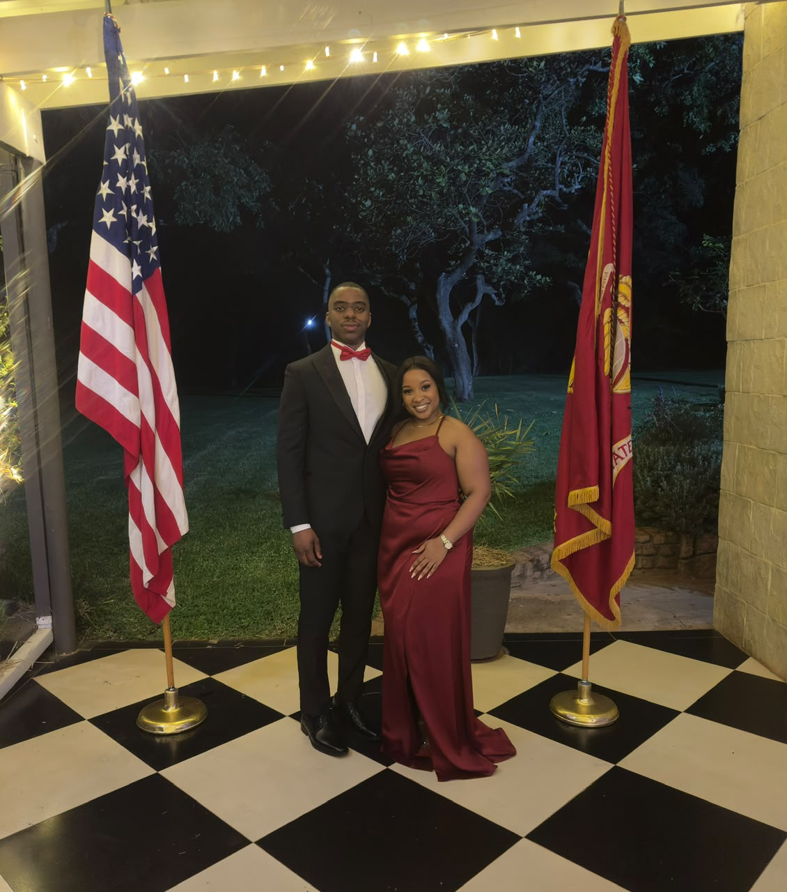
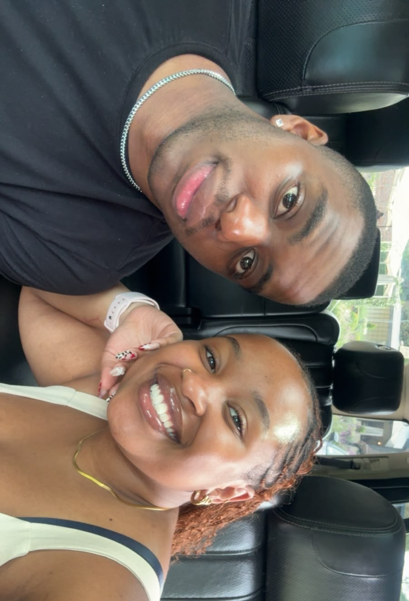
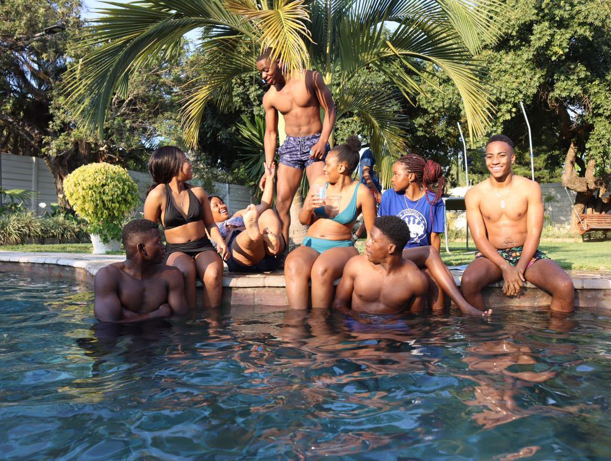

Tap to Open
So, we’ve known each other for over 5 years at this point and that feels insane to me. I feel like whenever the story of how we began is narrated, you'll start with “You know she never liked me, huh” lol! From our coffee dates, to random Saturday outings where I met just how diverse Ethan is, to jumping like kids and you showing off your brilliant gym skills, to high school parties as the oldest people in the room - I love the adventures you’ve taken me on, and I wish I had captured more of them, but I won't make that mistake going forward. I can't wait to make loads of memories on our future adventures because I know we've barely scratched the surface. It took us time to get to this moment, the moment where we chose each other – but I promise to keep choosing you, over and over.




So, I’ve been thinking about what exactly to say to you, what to type, how to find the words that accurately represent my emotions and feelings towards you – and ultimately I decided I’ll do what I always do – type what my heart says and go back to fix the 100 typos and grammatical errors I would have left.
‘Happy Birthday’ alone feels like something far too small for someone who has become such a meaningful part of my life in these last couple of months. So, I decided it might be a good time to also show off my skills – I hope you like it!.
By now I’m sure you know how incredibly proud of you I am. Not just for the things you have accomplished to date, but for the person you have become through all of them. I have been there to watch you navigate so many seasons in a short period of time – your degree, first big boy job, the PT journey, family dramas, friendships and figuring out what you want your life to look like. Somehow, through all the bullshit – you keep moving forward.
One of the things I really admire about you is your determination. The drive you possess to keep moving forward even when it feels so difficult. You might question yourself or have no idea what you’re meant to do next, but you get up and keep going. I hope this year reminds you that you don’t have to have everything figured out to be doing well – you’re allowed to grow and change your mind and be whoever you want to be.
And selfishly – I’m grateful that I get to know this version of you.
I’m grateful for the conversations that have 20 different topics at the same time, for the banter and the philosophical insights from time to time. I’m grateful for the moments where we have been on the same line of the same page of the same book but also for the moments where we didn’t quite understand each other and had to learn to appreciate each other better.
You’ve had such an impact on me too. There are parts of the way I see myself now that I don’t think would’ve existed without you. I've learnt patience and consideration in ways I never knew I could. You’ve encouraged me especially with my confidence, my fitness and the way I challenge myself. You have been there for me even when I couldn’t be there for myself, and I hope you know just how deeply your presence mattered in my life.
I also hope this year gives back to you. I hope you experience joy that doesn’t need to be earned first. I hope you have more moments where you appreciate how beautiful your life is. I can’t wait for when your hard work starts opening doors you didn’t even know were there. I hope you become even more confident in the man you are becoming, and I hope you never lose the parts of you that make you, you.
Wherever this next year takes you (yes, I will be there also), I hope you know there’s someone who is endlessly rooting for you, celebrating all your wins, listening to every thought even if it might sound ridiculous, laughing at your nonsense and wanting to see you happy. (Someone is me btw).
I love getting to know you. I love the person you are and the person you’re becoming – and all the little pieces I’ve been lucky to discover along the way.
So, cheers to 23!
To your first full year of being a working man, to your growing PT journey, to new adventures, new memories, new opportunities, more laughter, more growth, and a ridiculous amount of happiness.
Happy Birthday Ethan. I hope this year is kind to you.
I love you Flowers.